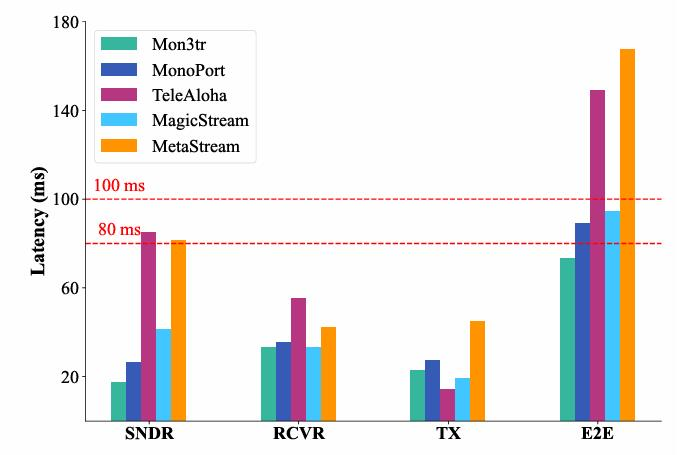

Mon3tr: Test-time Monocular 3D Telepresence with Pre-built Gaussian Avatars as Amortization
Fangyu Lin1
Yingdong Hu1
Zhening Liu1
Yufan Zhuang1
Zehong Lin1
Jun Zhang1
Abstract
Immersive telepresence aims to transform human interaction in AR/VR applications by enabling lifelike full-body holographic representations for enhanced remote collaboration.
However, existing systems rely on hardware-intensive multi-camera setups and demand high bandwidth for volumetric streaming, limiting their real-time performance on mobile devices.
To overcome these challenges, we propose Mon3tr, a novel test-time Monocular 3D telepresence framework that integrates 3D Gaussian splatting (3DGS) based parametric human modeling into telepresence for the first time.
Mon3tr adopts an amortized computation strategy, dividing the process into a one-time offline multi-view reconstruction phase to build a user-specific avatar and a monocular online inference phase during live telepresence sessions.
Using a single monocular RGB camera, it captures body motions and facial expressions in real time to drive the 3DGS-based parametric human model, significantly reducing system complexity and cost.
The extracted motion and appearance features are transmitted at <0.2 Mbps over WebRTC’s data channel, allowing robust adaptation to network fluctuations.
On the receiver side, e.g., Meta Quest 3, we develop a lightweight 3DGS attribute deformation network to dynamically generate corrective 3DGS attribute adjustments on the pre-built avatar, synthesizing photorealistic motion and appearance at ∼ 60 FPS.
Extensive experiments demonstrate the state-of-the-art performance of our method, achieving a PSNR of >28 dB for novel poses, an end-to-end latency of ∼ 80 ms, and >1000× bandwidth reduction compared to point-cloud streaming, while supporting real-time operation from monocular inputs across diverse scenarios.
Method
System overview of Mon3tr. Before the online immersive telepresence or conferencing, Mon3tr pre-builds a photorealistic animatable avatar based on pre-recorded video clips, which is then uploaded to a cloud server for subsequent use.
During runtime, a monocular RGB camera captures and estimates SMPL, FLAME, and MANO parameters [gvhmr, hamer, smirk] in parallel and sends them to the VR viewer via a Wi-Fi router with controlled bandwidth [tc].
The pre-built avatar is then driven in real time at ~ 60 FPS on the device.
Results & Comparisons
Latency

End-to-end Latency